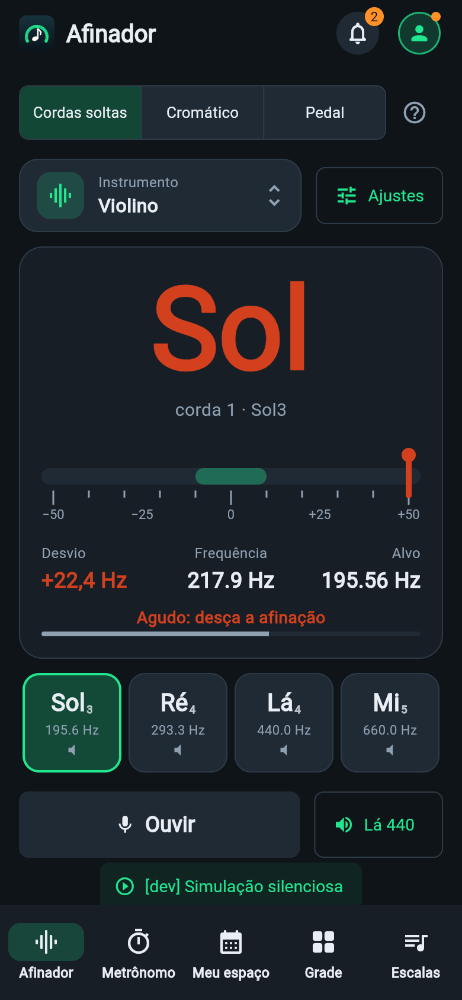
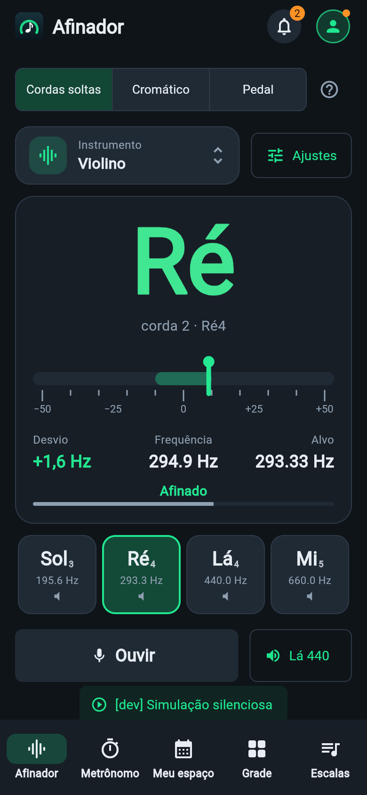
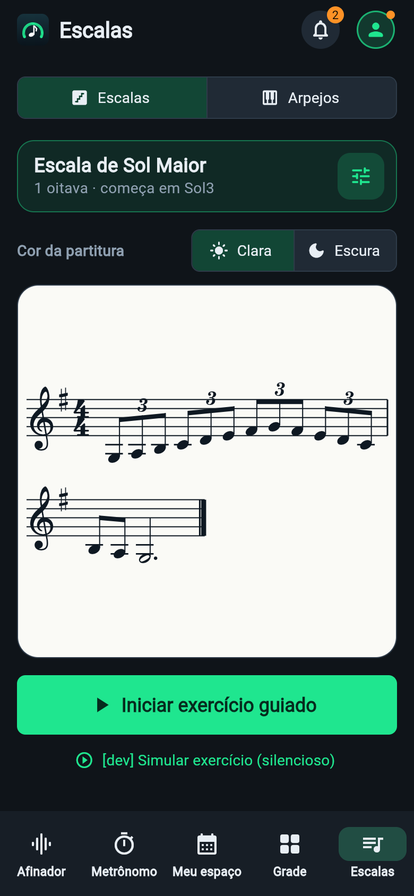
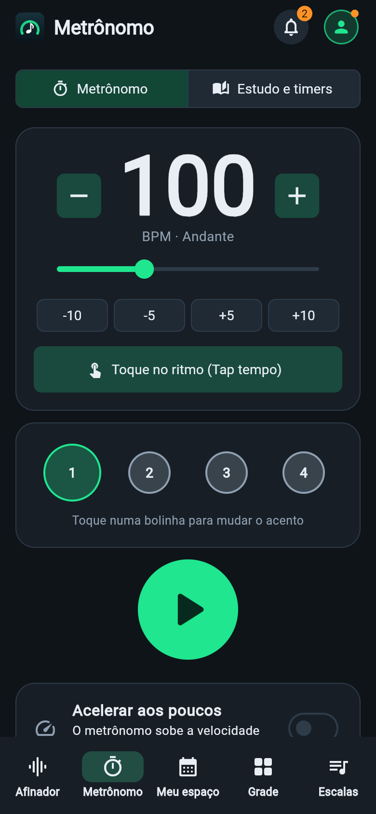
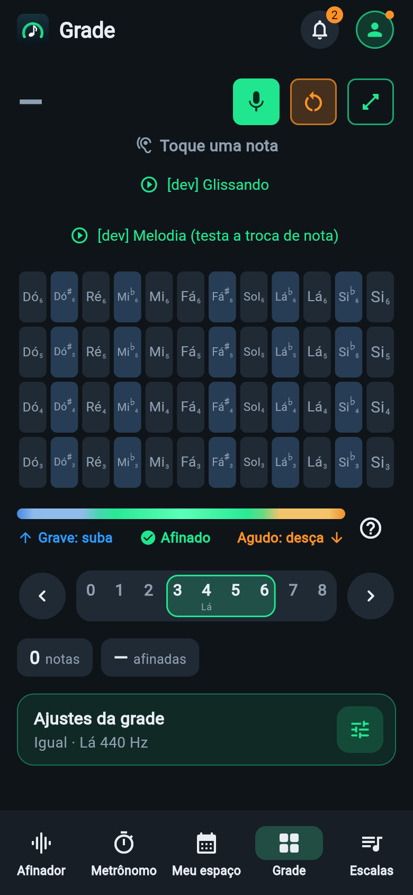
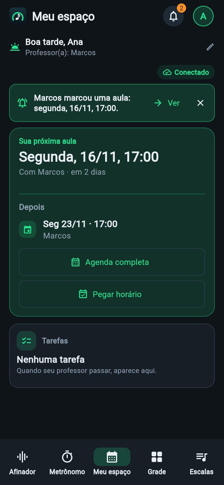
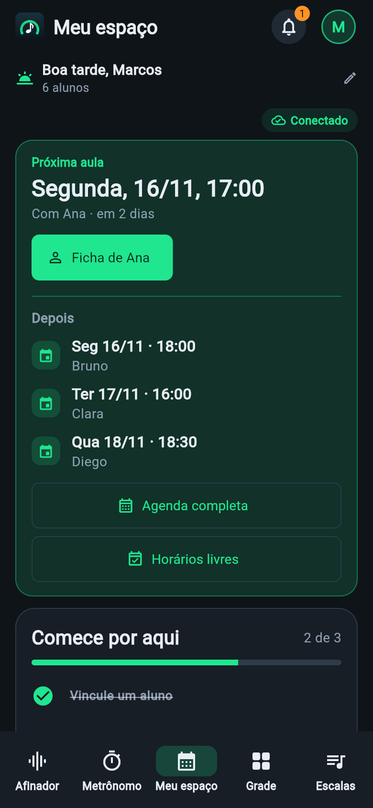

O Notemusic escuta e diz na hora se está afinada, baixa ou alta. Sem cadastro, sem pegadinha.



Abra o que precisa, quando precisar. O resto fica quieto esperando.


Seu professor marca a aula, você vê na hora e pega um horário livre.
Nada de formulário. Seus dados ficam neste aparelho e a conta só entra em cena se você quiser ligar com um professor.